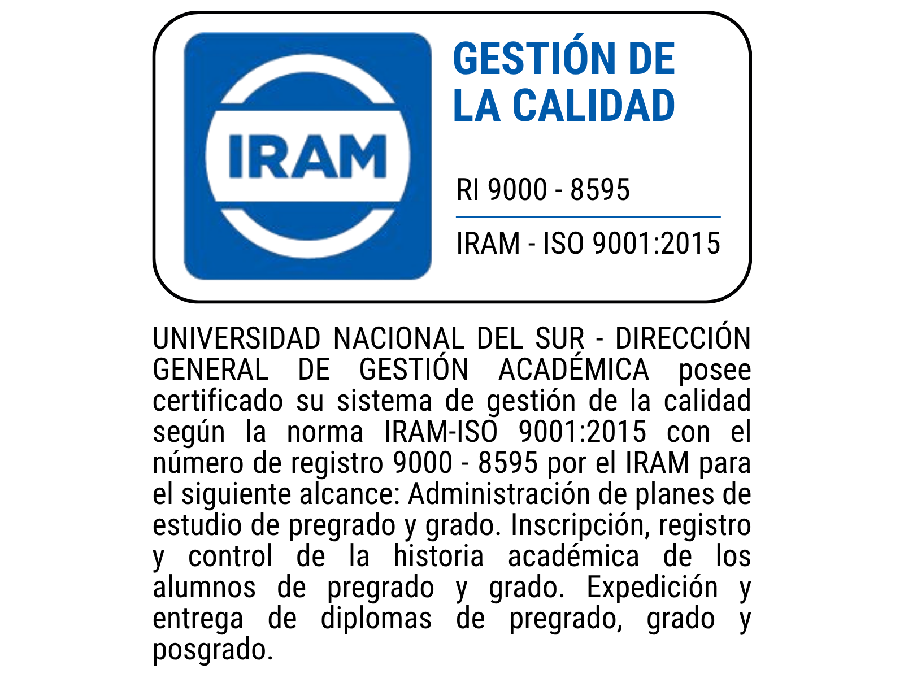

Equipo
El personal realiza su trabajo con responsabilidad, eficacia y empatía, de forma coordinada y con método, gracias al trabajo en equipo y a la formación continua.
DGGA
Gestionar de manera eficiente e innovadora los procesos técnico-administrativos de:
Nos comprometemos a promover la mejora continua, la transformación digital y la innovación en todos los servicios prestados, con el objetivo de satisfacer las necesidades y expectativas de la comunidad universitaria y contribuir al desarrollo institucional sostenible.
Ser reconocida como un pilar fundamental en la gestión técnico-administrativa-académica de la Universidad Nacional del Sur, promoviendo la transformación de la experiencia estudiantil mediante la digitalización de servicios y la implementación de procesos más eficientes, accesibles y alineados con las demandas actuales de los estudiantes.
Fomentar la excelencia en la calidad de sus servicios, impulsando la transformación digital, la innovación en los procesos administrativos y la formación integral de sus trabajadores.
Desarrollar acciones en colaboración con las Unidades Académicas y la Administración Central para conformar un sistema ágil, funcional y flexible de aplicaciones informáticas, logrando la digitalización total de sus trámites.
Ser un referente inspirador para otras áreas de la universidad, promoviendo el intercambio de buenas prácticas, la innovación continua y la mejora constante en todos los niveles de la institución.
Trabajar activamente en la integración de principios de sostenibilidad, alineándose con los Objetivos de Desarrollo Sostenible (ODS) y gestionando los riesgos y oportunidades para asegurar la continuidad y mejora de los servicios prestados.
03
El personal realiza su trabajo con responsabilidad, eficacia y empatía, de forma coordinada y con método, gracias al trabajo en equipo y a la formación continua.
Fomentar una cultura de mejora continua basada en la evaluación constante, la toma de decisiones informadas, la identificación de oportunidades de mejora y la implementación de acciones correctivas, con el objetivo de optimizar los servicios técnico-administrativos.
Trabajar para garantizar, tanto en su infraestructura como en su contenido, los principios de igualdad de oportunidades, no discriminación y accesibilidad para todas las personas.
Fomentar la igualdad, la inclusión, la aceptación del disenso y el reconocimiento de la persona como ser autónomo, único y libre, tanto en sus palabras como en sus decisiones.
Adaptar la comunicación a los diferentes públicos con el fin de difundir la gestión técnico-administrativa, actividades, objetivos y resultados de manera ágil, eficaz y responsable.
Valorar el trabajo bien hecho, destacando la excelencia en la gestión y la prestación de servicios, generando compromiso con la institución, crecimiento profesional y satisfacción personal.
Promover la creatividad, aportando nuevas ideas, métodos, productos y servicios que den respuesta a las necesidades actuales y futuras de la comunidad universitaria; proponiendo y aceptando desafíos para transformarlos en acciones exitosas con impacto en la Universidad y su entorno.
Desarrollar procesos y actividades que busquen los mejores resultados con el mínimo de recursos, preservando la calidad ambiental en busca de la sostenibilidad institucional.
Como parte de una institución pública, la DGGA asume la responsabilidad y obligación de rendir cuentas de las acciones que realiza, cómo las hace y qué resultados obtiene. La información generada y disponible será de acceso público, excepto aquella protegida por la Ley de Datos Personales.
Objetivos específicos de la Dirección General de Gestión Académica y su avance informado a diciembre.
El sistema administrativo de gestión académica de la Universidad Nacional del Sur (UNS) comprende la gestión técnico-administrativa de los procesos de los Planes de estudio, el Ingreso, la Gestión de la Historia Académica y la Expedición y Entrega de Títulos de las personas estudiantes de Pregrado, Intermedio y Grado, así como la expedición y entrega de Títulos de las personas estudiantes de Posgrado.
La Dirección General de Gestión Académica (DGGA) de la UNS se compromete a brindar servicios técnico-administrativos de excelencia que cumplan con los más altos estándares de calidad. Lograrlo implica comprometernos a:
Promover la mejora continua e innovación como pilares fundamentales, propiciando la transformación digital en sus procesos y adoptando nuevas prácticas para optimizar continuamente todos sus servicios.
Fomentar un ambiente de trabajo inclusivo, participativo y colaborativo, implicando a todo el personal en la consecución de los objetivos de calidad mediante el trabajo en equipo y el aprendizaje constante.
Identificar, evaluar y gestionar los riesgos y oportunidades, evaluando de manera periódica la calidad de los servicios y tomando acciones correctivas para minimizar impactos negativos y maximizar los beneficios para la comunidad universitaria.
Mejorar continuamente la eficacia del Sistema de Gestión de la Calidad, utilizando indicadores de desempeño para medir el rendimiento, incluyendo la protección medioambiental y la conservación de recursos.
Garantizar la actualización constante de sus servicios para satisfacer las necesidades y expectativas de la comunidad universitaria.
Impulsar la formación integral de sus trabajadores, promoviendo valores éticos, la confidencialidad de los datos personales y la integridad pública.
Cumplir con la normativa y regulaciones vigentes, así como con los requisitos de la norma ISO 9001.
Proporcionar un servicio de atención al estudiante accesible, eficiente y personalizado.
Fomentar la comunicación interna y externa para asegurar la transparencia y la eficacia de sus procesos.
Implementar y mantener un sistema efectivo de control de documentos y registros para asegurar la disponibilidad, integridad y trazabilidad de la información crítica en todos los procesos.
Actualizar la Visión organizacional y su Plan Estratégico en el momento en que se crea necesario, especialmente cuando se produzcan variaciones importantes en la dirección estratégica de la universidad.
Adecuar la Misión organizacional cuando sea necesario, acompañando los cambios o el surgimiento de nuevas necesidades de servicio que estarán a cargo de la DGGA.
Alinear los objetivos estratégicos con los Objetivos de Desarrollo Sostenible (ODS) establecidos por las Naciones Unidas, trabajando activamente para integrar los principios de sostenibilidad en todos sus procesos.
Esta política de calidad se basa en el compromiso de todo el equipo de trabajo que conforma la DGGA. Será revisada periódicamente para asegurar su pertinencia y efectividad en la mejora continua de sus servicios misionales. La Alta Dirección de la DGGA se compromete a difundir esta política de la calidad a todas las partes interesadas en el marco de los procesos alcanzados por su Sistema de Gestión de la Calidad. Se establece públicamente que su Misión, Visión y Valores (dentro de los generales de la UNS), servirán de base para identificar los objetivos que permitan establecer sus principales líneas de actuación.
Aprobación institucional
Dr. Daniel Vega
Rector
Dr. Mariano Garrido
Secretario General Académico
Lic. Nora Graciela Ovejero
Directora General de Gestión Académica
Rev. 05/03/2025
Ver documento firmadoGestión de la Calidad

Elegí el tema de tu consulta y te ayudamos a encontrar la información o el canal correspondiente.